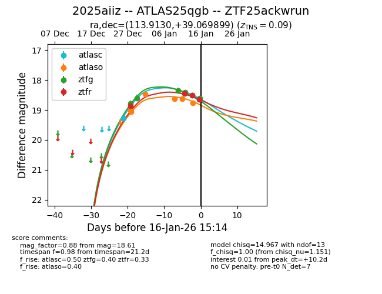
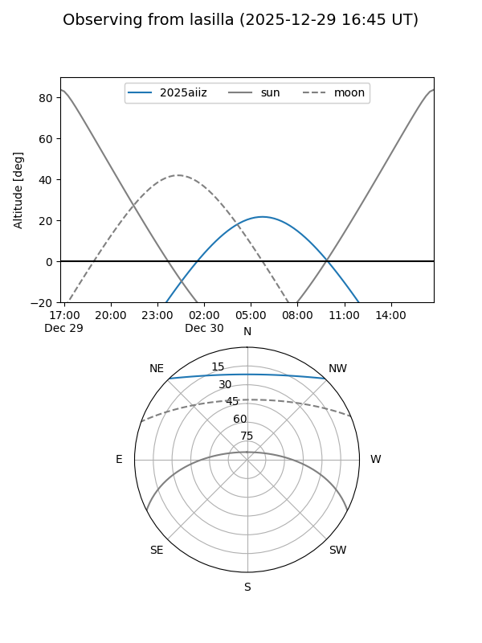
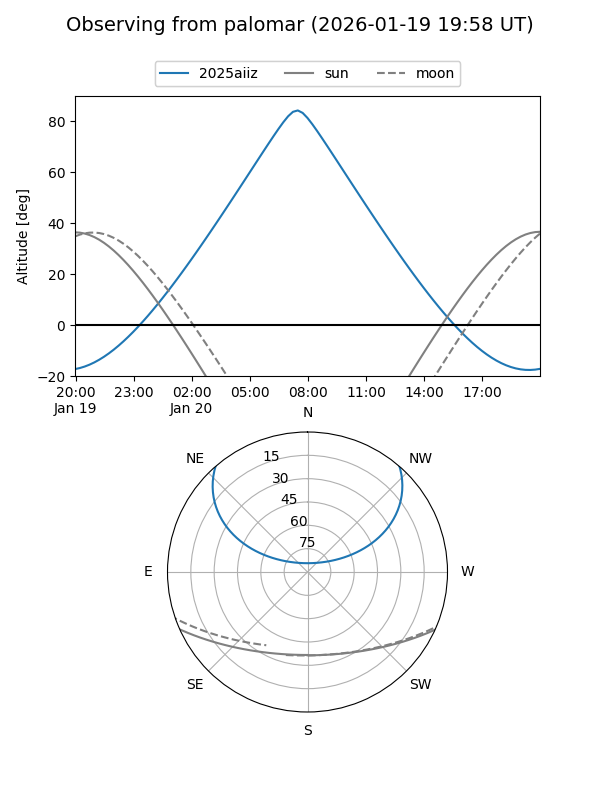
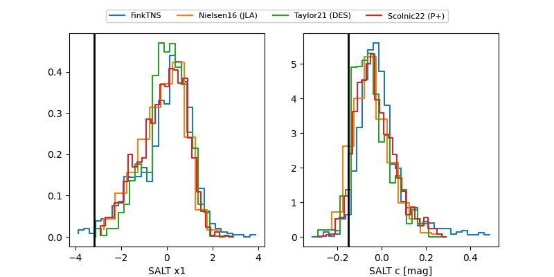

2025aiiz
Target 2025aiiz at 2025-12-31 17:00
Aliases and brokers:
FINK:
Lasair:
ALeRCE:
TNS:
YSE:
alt names
ZTF25ackwrun (ztf,fink_ztf)
2025aiiz (tns,yse)
ATLAS25qgb (atlas)
Coordinates:
equatorial (ra, dec) = 113.9130,+39.06990
equatorial (HMS+DMS) = 07:35:39.13,+39:04:11.64
galactic (l, b) = (180.0259,+24.82629)
Flags:
Photometry:
last atlasc=19.27, atlaso=19.07, ztfg=18.60, ztfr=18.85
1 atlasc, 2 atlaso, 2 ztfg, 1 ztfr detections
Lightcurve

Visibility


Additional plots
